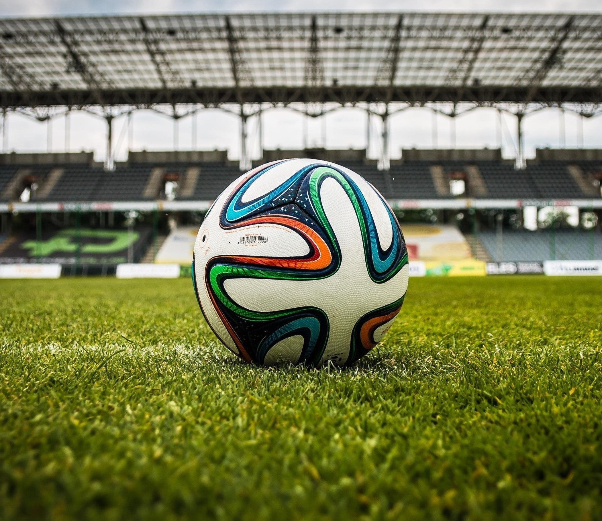

today i learned...

learned that the 2022 world cup is problematic due to it being in qatar. there are many reports saying qatar bribed fifa to hold the world cup. qatar built seven brand-new stadiums for the event, treating and paying its migrant workers poorly. according to a 2021 guardian report, 37 migrants died while working on qatar’s world cup stadiums. qatar is also discriminatory towards women and the lgbtq+ community.